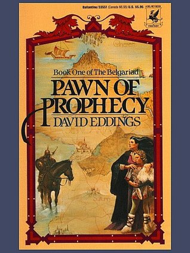

Search to your Hearts Content
Find something you like. We will tell you where to find it.

-
Maximum Ride: Hawk 1
 ×
×Author
James Patterson
Description
A story for a new generation of Maximum Ride fans! 17-year-old Hawk is growing up hard and fast in post-apocalyptic New York City . . . until a perilous destiny forces her to take flight.
Where is Maximum Ride?
Ten years ago a girl with wings fought to save the world. But then she disappeared.
Now she's just a fading legend, remembered only in stories.
Hawk doesn't know her real name. She doesn't know who her family was, or where they went. The only thing she remembers is that she was told to wait on a specific street corner, at a specific time, until her parents came back for her.
She stays under the radar to survive...until a destiny that's perilously close to Maximum Ride's forces her to take flight. Someone is coming for her.
But it's not a rescue mission.
It's an execution.Book in Series
This is tenth book in the Maximum Ride series, and the first of the Maximum Ride: Hawk series.
Buy
-
Starless Night
×
Author
R. A. Salvatore
Description
The Underdark. A place of brooding darkness, where no shadows exist, and where Drizzt Do'Urden does not wish to go. The noble dark elf must return there, though, he must go back to find his friends in the gnome city of Blingdenstone, and on to Menzoberranzan, the city of drow. Only then can Drizzt discern what perils might reach out from that dark place to threaten his friends in Mithril Hall.
Book in Series
This is eigth book in the "Forgotten Realms: Legend of Drizzt".
-
Crystal Shard
×
Author
R. A. Salvatore
Description
Drizzt Do'Urden has settled in the windswept towns of Icewind Dale. There, he encounters a young barbarian named Wulfgar, captured in a raid and made the ward of a grizzled dwarf name Bruenor. With Drizzt's help, Wulfgar will grow from a feral child to a man with the heart of a dwarf, the instincts of a savage, and the soul of a hero. But it will take even more than that to defeat the demonic power of Crenshininbon, the fabled Crystal Shard.
Book in Series
This is fourth book in the "Forgotten Realms: Legend of Drizzt" series.
-
Otome Survival
×
Authors
Haru no Hi
Harunohi Biyori
Description
A girl Alicia lived as an orphan in a world of sword and magic Ciel.
One day, she learned that she was an “otome game’s heroine”. Even her parents’ death was simply a part of the scenario. Alicia judged the heroine’s setting as 「nonsense」and discarded it decisively. She introduced herself as adventurer 『Aria』, gradually mastered multiple weapons and magic, and grew to become the 「Ash Crowned Princess of Slaughter」! But, by accepting a request to guard the “villainess”, before she realized it she got dragged into the stage where nobles quarreled against each other――？
「I am “I”. I’m not a game character!」
Create weapon! Train your body!
Survive the fighting against powerful enemies and smash apart the otome game!
A sublime and exhilarating other world battle fantasy with charming fighting heroine!
Book in Series
This is a link to the english translation of the "Otome Game no Heroine de Saikyou Survival" light novel series. The translation is ongoing on Novel Updates.
-
Keeper of the Lost Cities
 ×
×Author
Shannon Messenger
Description
In this riveting series opener, a telepathic girl must figure out why she is the key to her brand-new world before the wrong person finds the answer first.
Twelve-year-old Sophie has never quite fit into her life. She’s skipped multiple grades and doesn’t really connect with the older kids at school, but she’s not comfortable with her family, either. The reason? Sophie’s a Telepath, someone who can read minds. No one knows her secret—at least, that’s what she thinks…
But the day Sophie meets Fitz, a mysterious (and adorable) boy, she learns she’s not alone. He’s a Telepath too, and it turns out the reason she has never felt at home is that, well…she isn’t. Fitz opens Sophie’s eyes to a shocking truth, and she is forced to leave behind her family for a new life in a place that is vastly different from what she has ever known.
But Sophie still has secrets, and they’re buried deep in her memory for good reason: The answers are dangerous and in high-demand. What is her true identity, and why was she hidden among humans? The truth could mean life or death—and time is running out.Book in Series
This is the first book in the "Keepers of the Lost Cities" Series.
-
Salvos, Curious Beginnings
 ×
×Author
V. A. Lewis
Description
The life of an Infant Demon is a bloody grind to the top. For Salvos, a curious newborn Demon with a penchant for making friends, surviving the swarms of wild Demons in the Netherworld was always going to be a difficult task. She will adapt, gain experience, and evolve to survive this hellish landscape with the help of her sole companion.
But when her companion's life is threatened by a mysterious Demon King, she'll have to do what it takes to save him. Even if it means separating from him and being tossed into an unfamiliar world with Humans, monsters, and a bright blue sky where she is scorned for being born a Demon.
The law of evolution is survival of the fittest, and Salvos will survive.
Book in Series
This is the first book in the "Salvos" series.
-
Ranger's Apprentice: The Ruins of Gorlan
×
Author
John Flanagan
Description
They have always scared him in the past — the Rangers, with their dark cloaks and shadowy ways. The villagers believe the Rangers practice magic that makes them invisible to ordinary people. And now 15-year-old Will, always small for his age, has been chosen as a Ranger's apprentice. What he doesn't yet realize is that the Rangers are the protectors of the kingdom. Highly trained in the skills of battle and surveillance, they fight the battles before the battles reach the people. And as Will is about to learn, there is a large battle brewing. The exiled Morgarath, Lord of the Mountains of Rain and Night, is gathering his forces for an attack on the kingdom. This time, he will not be denied....
Book in Series
This is the first book in the "Ranger's Apprentice" series.
-
The Dragonet Prophecy
×
Author
Tui T. Sutherland
Description
A thrilling new series soars above the competition and redefines middle-grade fantasy fiction for a new generation!
The seven dragon tribes have been at war for generations, locked in an endless battle over an ancient, lost treasure. A secret movement called the Talons of Peace is determined to bring an end to the fighting, with the help of a prophecy -- a foretelling that calls for great sacrifice.Five dragonets are collected to fulfill the prophecy, raised in a hidden cave and enlisted, against their will, to end the terrible war.But not every dragonet wants a destiny. And when the select five escape their underground captors to look for their original homes, what has been unleashed on the dragon world may be far more than the revolutionary planners intended . . .Book in Series
This is the first book in the "Ranger's Apprentice" series.
-
Hatchet
×
Author
Gary Paulsen
Description
Brian is on his way to Canada to visit his estranged father when the pilot of his small prop plane suffers a heart attack. Brian is forced to crash-land the plane in a lake--and finds himself stranded in the remote Canadian wilderness with only his clothing and the hatchet his mother gave him as a present before his departure.
Brian had been distraught over his parents' impending divorce and the secret he carries about his mother, but now he is truly desolate and alone. Exhausted, terrified, and hungry, Brian struggles to find food and make a shelter for himself. He has no special knowledge of the woods, and he must find a new kind of awareness and patience as he meets each day's challenges. Is the water safe to drink? Are the berries he finds poisonous?
Slowly, Brian learns to turn adversity to his advantage--an invading porcupine unexpectedly shows him how to make fire, a devastating tornado shows him how to retrieve supplies from the submerged airplane. Most of all, Brian leaves behind the self-pity he has felt about his predicament as he summons the courage to stay alive.
A story of survival and of transformation, this riveting book has sparked many a reader's interest in venturing into the wild.Book in Series
This is the first book in the "Brian's Saga" series.
-
The Unwanteds
 ×
×Author
Lisa McMann
Description
When Alex finds out he is Unwanted, he expects to die. That is the way of the people of Quill. Each year, all the thirteen-year-olds are labeled as Wanted, Necessary, or Unwanted. Wanteds get more schooling and train to join the Quillitary. Necessaries keep the farms running. Unwanteds are set for elimination.
It’s hard for Alex to leave behind his twin, Aaron, a Wanted, but he makes peace with his fate—until he discovers that instead of a “death farm,” what awaits him is a magical place called Artimé. There, Alex and his fellow Unwanteds are encouraged to cultivate their creative abilities and use them magically. Everything Alex has ever known changes before his eyes, and it’s a wondrous transformation.
But it’s a rare, unique occurrence for twins to be divided between Wanted and Unwanted, and as Alex and Aaron's bond stretches across their separation, a threat arises for the survival of Artim that will pit brother against brother in an ultimate magical battle.Book in Series
This is the first book in the "The Unwanteds" series.
-
The Wishing Spell
 ×
×Author
Chris Colfer
Description
Alex and Conner Bailey's world is about to change, in this fast-paced adventure that uniquely combines our modern day world with the enchanting realm of classic fairy tales.
The Land of Stories tells the tale of twins Alex and Conner. Through the mysterious powers of a cherished book of stories, they leave their world behind and find themselves in a foreign land full of wonder and magic where they come face-to-face with the fairy tale characters they grew up reading about.
But after a series of encounters with witches, wolves, goblins, and trolls alike, getting back home is going to be harder than they thought.Book in Series
This is the first book in the "The Land of Stories" series.
-
Pawn of Prophecy

×
Author
David Eddings
Description
A magnificent epic set against a history of seven thousand years of the struggles of Gods and Kings and men - of strange lands and events - of fate and a prophecy that must be fulfilled! THE BELGARIAD
Long ago, so the Storyteller claimed, the evil God Torak sought dominion and drove men and Gods to war. But Belgarath the Sorcerer led men to reclaim the Orb that protected men of the West. So long as it lay at Riva, the prophecy went, men would be safe.
But that was only a story, and Garion did not believe in magic dooms, even though the dark man without a shadow had haunted him for years. Brought up on a quiet farm by his Aunt Pol, how could he know that the Apostate planned to wake dread Torak, or that he would be led on a quest of unparalleled magic and danger by those he loved - but did not know? For a while his dreams of innocence were safe, untroubled by knowledge of his strange heritage. For a little while... THUS BEGINS BOOK ONE OF THE BELGARIAD'Book in Series
This is the first book in the "Belgariad" series.